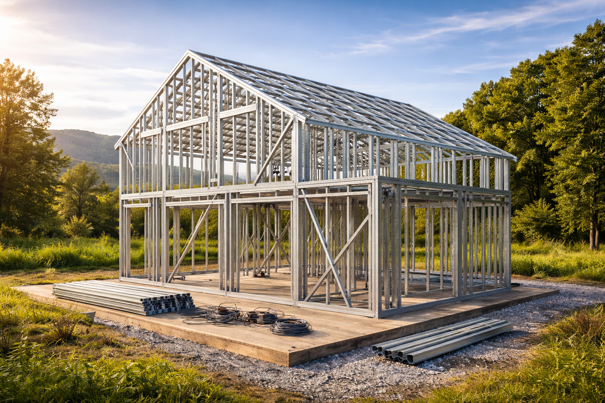

Estrutura em Aço Galvanizado
O Light Steel Frame é um sistema construtivo industrializado composto por perfis leves de aço galvanizado formados a frio.
Esses perfis são produzidos com alta precisão dimensional em ambiente industrial, garantindo padronização e controle de qualidade na estrutura.
A galvanização protege o aço contra corrosão, proporcionando durabilidade e segurança estrutural ao longo do tempo.